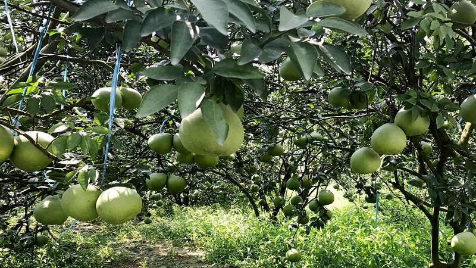
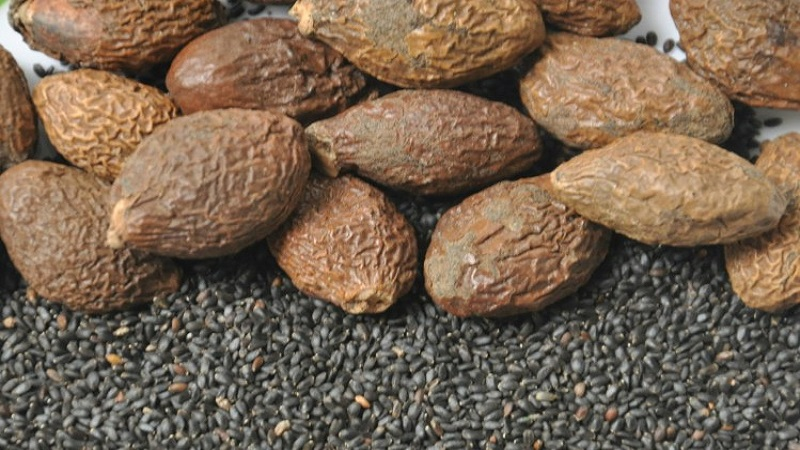
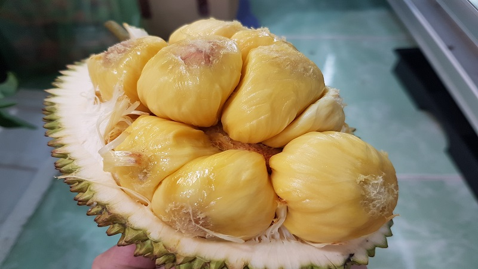
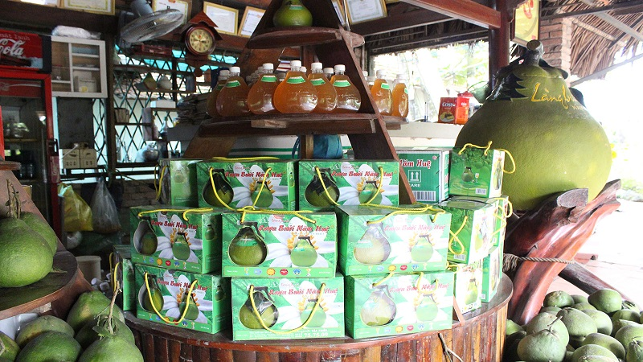

Top 04 đặc sản Đồng Nai mua về làm quà tặng tuyệt nhất
Nếu bạn đang có kế hoạch khám phá hết các khu du lịch với nhiều phong cảnh đẹp ai cũng sẽ mê đắm, bạn đừng nên bỏ qua đặc sản tại đây.
01. Bưởi Tân Triều
Đã nhắc đến du lịch Đồng Nai không thể nào quên được những trái bưởi Tân Triều. Những trái bưởi ngon nức tiếng ở đoạn sông Đồng Nai qua huyện Vĩnh Cửu vào thành phố Biên Hòa, một điều đặc biệt của loại bưởi này là mọi phần của trái bưởi có thể được chế biến thành đa dạng các món ăn như gỏi bưởi, nem bưởi, chè bưởi,...
Vỏ và cùi bưởi da xanh mỏng, các múi bưởi rất mọng nước nên thường được các du khách mua về để làm quà biếu, thờ cúng gia tiên hay đơn giản là món tráng miệng sau mỗi bữa ăn.
Bên cạnh đó, làng bưởi Tân Triều cũng là một trong những khu du lịch yên bình để bạn có thể tận hưởng không khí tự nhiên và thưởng thức các múi bưởi ngọt căng mọng.
02. Trái ươi rừng
Thường tập trung tại Vườn Quốc gia Nam Cát Tiên và khu dự trữ thiên nhiên văn hóa của tỉnh Đồng Nai. Khi muốn thưởng thức loại quả này, bạn cần phải cắt 2 đầu bỏ vào nước ấm để bóc lớp vỏ bên ngoài và ăn phần hạt bên trong, nhiều người thường trộn với đường và hạt é để tạo ra ly nước giải khát vào mùa hè nóng bức.
Hạt ươi rừng còn thể bảo quản được lâu và có nhiều công dụng chữa bệnh nên có giá thành khá đắt đỏ. Loại trái này chỉ được thu hoạch vào tháng 6 đến tháng 8 hàng năm, vì vậy bạn nên đến đúng mùa để có thể mang được loại đặc sản này về tặng người thân nhé.
03. Mít tố nữ Long Khánh
Nhờ có thổ nhưỡng được thiên nhiên ưu ái ban tặng mà mít tố nữ khu vực này nổi tiếng với múi mít màu vàng đậm và mùi thơm ngào ngạt, khi ăn sẽ có vị ngọt lịm hơn so với các loại mít thường.
Khi ăn người ta sẽ bổ đôi trái mít để có thể thấy được chùm múi mít xung quanh cùi mít, người dân nơi đây thường sẽ cầm luôn cùi mít để có thể thưởng thức trọn vị của trái mít đặc sản này.
Loại mít đặc sản này đã theo chân các người lái buôn đến các chợ lớn nhỏ để các du khách có thể mua loại mít đặc biệt này về làm quà tặng, hoặc nếu có thời gian, bạn nên thưởng thức tại vườn những trái mít đặc biệt của vùng Long Khánh nhé!
04. Rượu bưởi
Nếu như bạn có thể mang về nhà những trái bưởi Tân Triều để thưởng thức từng múi bưởi căng mọng thì bạn cũng nên cân nhắc mua rượu bưởi về để làm quà tặng, loại rượu có nồng độ vừa phải, không quá gắt và vị thanh nồng của bưởi sẽ lưu lại cổ họng của bạn khi thưởng thức.
Cả nam và nữ đều có thể thưởng thức được hương vị thơm ngon này, nhất là có công dụng tốt cho tiêu hóa và làm đẹp da. Bên cạnh đó, vẻ bề ngoài của bình rượu được thiết kế độc đáo với hình dáng của những trái bưởi chín sẽ gây ấn tượng mạnh đối với người nhận quà đó!